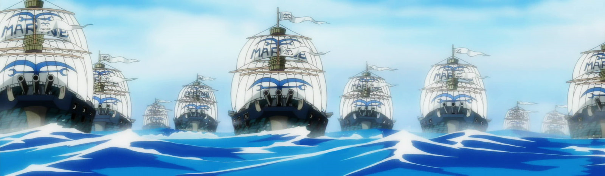

A Marinha é a força marítima militar do Governo Mundial, encarregada da aplicação da lei, segurança internacional e operações militares. Os marinheiros são um dos Três Grandes Poderes do mundo, ao lado dos Shichibukai e dos Yonkou.
Eles estão presentes em todos os mares ao redor do mundo, como evidenciam suas filiais. O foco de seus ativos está na muito mais perigosa Grand Line.
No rescaldo da Batalha de Marineford, a base de operações do Quartel General da Marinha foi transferido para o Novo Mundo.
Devido às suas ações e papel em geral, eles são um dos principais grupos antagonistas da série.
O dever dos Marinheiros é manter a lei e a ordem em todo mundo e impor a vontade e o poder do Governo Mundial. Eles são, portanto, considerados a força de desenvolvimento estratégico chave do Governo Mundial e espera-se obedecer ás suas ordens à vontade. As vezes, esses ordens são questionáveis, no entanto eles são esperados para realizá-las, independentemente da opinião. Entre suas funções está conceder recompensa aos caçadores de recompensas sobre a cabeça de um criminoso. Eles toleram caçadores de recompensas como método de fazer o seu trabalho mais fácil, mas são conhecidos por terem recompensas por suas cabeças também. Criminosos detidos que são trazidos vivos são entregues como um exemplo de : os marinheiros são encarregados de assegurar a exportação desses criminosos para prisão e/ou a sua execução.
Fuzileiros muitas vezes trabalham em duplas com um oficial superior e um segundo em comando ou um subordinado que é de uma classificação mais baixa. Estas parcerias podem permanecer mesmo durante promoções com ambos os pares avançando no ranking juntos. No par, o superior oficial vai dar as ordens para escolher para aqueles sob seu comando, enquanto os outros agem como um consultor ou coletando informações, assegurando o comando de seu parceiro.
Marinheiros superiores classificados (almirantes e o almirante da frota) devem ser chamados para liderar as forças da Marinha para a guerra. isto pode assumir a forma de apreender muitos criminosos de uma só vez, protegendo o Nobre Mundial ou chamar um Buster Call para enfrentar uma situação. Vice-almirantes são os que servem a bordo dos navios que os almirantes chamam e são encarregados de executar as ordens que recebem dos almirantes.
O principal objetivo dos marinheiros permanece na ideia de trazer justiça a qualquer criminoso. Eles usam a justiça como sua política constituía para gerar um mundo que é feito inteiramente de um oceano muito mais fácil. No entanto, o principal problema dentro da Marinha é a abordagem à Justiça. eles são geralmente divididos entre aqueles que apoiam a Justiça Moral e aqueles que apoiam a Justiça Absoluta com esse último sendo o código de conduta para os marinheiros como uma doutrina central. No entanto, há pouca preocupação dos fuzileiros com alta classificação de como a Justiça é realizada tanto tempo como é, levando aqueles que realmente apoiam a justiça absoluta para fazer ações questionáveis no exercício de suas funções.
Os fuzileiros são ajudados também pelos Shichibukai, em termos de manutenção das "Três Grandes Potências", e, como tal, devem cooperar quando necessário, apesar disso, vários marinheiros como Aokiji, Akainu, Smoker, Sengoku, Kizaru e Fujitora pensam nos Corsários como nada mais que Piratas. Por sua vez, os Shichibukai não tem obrigações de obedecer ordens dos marinheiros, a menos que as ordens sejam diretas do Governo Mundial.
Uma das partes mais questionáveis da "Justiça" dos marinheiros é quando se trata de escravidão. Apesar da prática de escravidão supostamente ter sido abolida anos antes, muitas vezes é mostrado que eles apenas olham para o outro lado. Especialmente quando se trata de escravos os Nobres Mundos onde é ainda visto como um crime libertar escravos mesmo que seja apenas uma criança. Muitas vezes, eles têm a tarefa de encontrar e recuperar o escravo fugitivo.

Site feito pelo fãs - 2021 - Everson Carlos